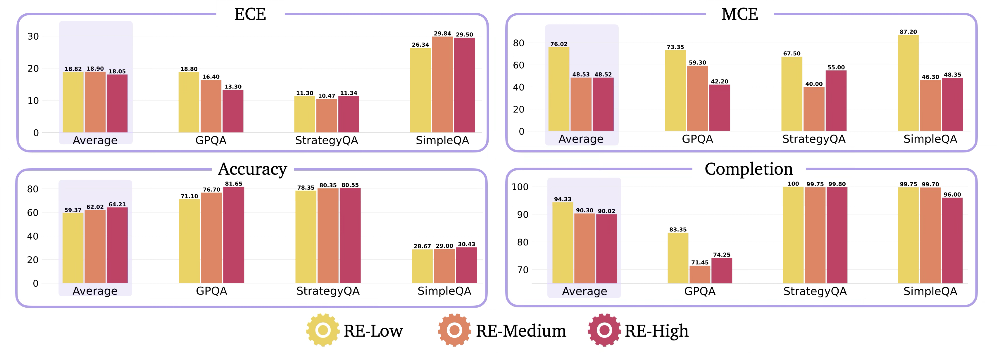
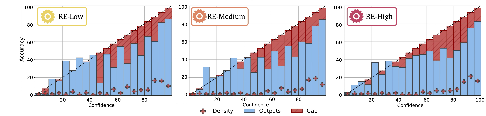

Reasoning about Uncertainty:
Do Reasoning Models Know When They Don't Know?
*Equal Contribution.

Reasoning language models have set state-of-the-art (SOTA) records on many challenging benchmarks, enabled by multi-step reasoning induced using reinforcement learning. However, like previous language models, reasoning models are prone to generating confident, plausible responses that are incorrect (hallucinations). Knowing when and how much to trust these models is critical to the safe deployment of reasoning models in real-world applications. To this end, we explore uncertainty quantification of reasoning models in this work. Specifically, we ask three fundamental questions: First, are reasoning models well-calibrated? Second, does deeper reasoning improve model calibration? Finally, inspired by humans' innate ability to double-check their thought processes to verify the validity of their answers and their confidence, we ask: can reasoning models improve their calibration by explicitly reasoning about their chain-of-thought traces? We introduce introspective uncertainty quantification (UQ) to explore this direction. In extensive evaluations on SOTA reasoning models across a broad range of benchmarks, we find that reasoning models: (i) are typically overconfident, with self-verbalized confidence estimates often greater than 85% particularly for incorrect responses, (ii) become even more overconfident with deeper reasoning, and (iii) can become better calibrated through introspection (e.g., o3-Mini and DeepSeek R1) but not uniformly (e.g., Claude 3.7 Sonnet becomes more poorly calibrated). Lastly, we conclude with important research directions to design necessary UQ benchmarks and improve the calibration of reasoning models.
Recent benchmarks reveal that reasoning models are well-calibrated on older datasets like ARC-Challenge and MMLU, but their calibration drops on newer, more challenging benchmarks such as StrategyQA, GPQA, and SimpleQA. This suggests that as benchmarks evolve, models struggle to maintain reliable confidence estimates. Calibration on one dataset does not guarantee good calibration on others, especially as models achieve near-perfect accuracy and overconfidence becomes harder to detect. As a result, continually updating benchmarks is crucial for accurately assessing and improving uncertainty quantification in reasoning models.
Is accuracy correlated with calibration in reasoning models? The ECE is strongly correlated with accuracy in state-of-the-art reasoning models. In essence, the self-verbalized confidence of reasoning models is generally not trustworthy in problems where they achieve low accuracy. Remarkably, Claude remains well-calibrated even in these low-accuracy settings. We observe the same trends in the correlation between accuracy and the MCE.
Does increasing reasoning depth improve calibration? Deeper reasoning leads to overall higher accuracy; however, as the accuracy of these models saturate, reasoning models become even more overconfident.
Deeper Reasoning vs. Underconfidence/Overconfidence? Reasoning models become more overconfident with deeper reasoning, evidenced by the increase in the density of samples in higher-confidence bins (e.g., the 90%-95% interval) without a corresponding increase in accuracy.
In this section, we explore whether reasoning models can become better calibrated by explicitly reasoning about their own uncertainty. We introduce a two-stage introspective uncertainty quantification (UQ) process: First, the model answers a question and provides its confidence. Then, a fresh instance of the model reviews the reasoning trace from the first stage, searching for flaws and updating its confidence estimate. We test three prompt strategies—IUQ-Low, IUQ-Medium, and IUQ-High—each increasing in conservativeness and critical self-reflection. Notably, the model is not asked to change its answer, only to reassess its confidence based on introspection. This approach helps us understand if models can self-correct overconfidence by critically evaluating their own reasoning, a step toward safer and more reliable AI systems. (Gemini is excluded from these results due to limited support for reasoning trace analysis.)
First, we show the effect of introspective UQ on the calibration of the reasoning models on average.
Calibration of reasoning models improves with introspective uncertainty quantification, particularly in challenging datasets, e.g., SimpleQA, with more conservative prompts, e.g., IUQ-Medium and IUQ-High.
Next, we show the effect of introspective UQ on the overconfidence/underconfidence of reasoning models on average.
More critical introspection, e.g., IUQ-Medium and IUQ-High, improves the calibration of reasoning models, mitigating model overconfidence, unlike IUQ-Low.
The benefits of introspective UQ can also be seen in Deepseek and o3-mini individually. However, since Claude is already well calibrated, introspective UQ can introduce unnecessary conservatism.
Introspective UQ improves the calibration of DeepSeek and o3-Mini, especially in the challenging dataset SimpleQA, but degrades the calibration of Claude.
Through introspection, DeepSeek and o3-Mini become less overconfident, especially with IUQ-Medium and IUQ-High, unlike Claude, which becomes more overconfident.
@misc{mei2025reasoninguncertaintyreasoningmodels,
title={Reasoning about Uncertainty: Do Reasoning Models Know When They Don't Know?},
author={Zhiting Mei and Christina Zhang and Tenny Yin and Justin Lidard and Ola Shorinwa and Anirudha Majumdar},
year={2025},
eprint={2506.18183},
archivePrefix={arXiv},
primaryClass={cs.AI},
url={https://arxiv.org/abs/2506.18183},
}